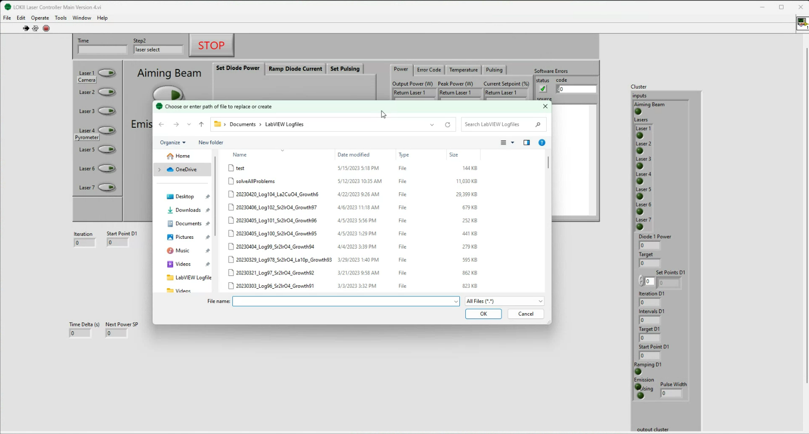
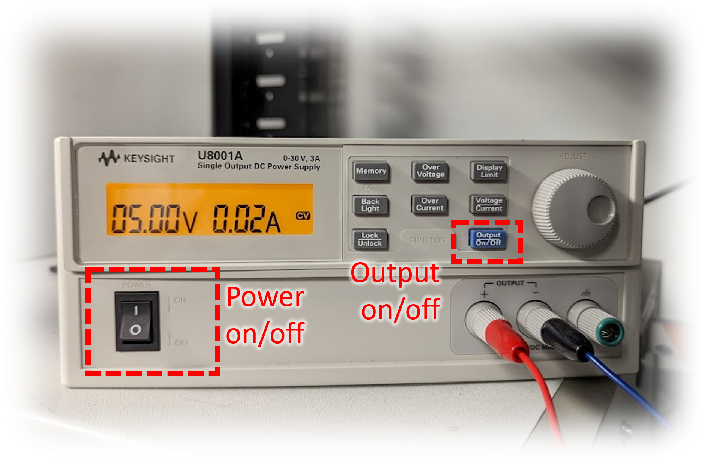

Using the lasers
Purpose: To give users an overview of how to use the lasers during a typical growth. For more detailed information about the laser units (including binary commands, pinout diagrams, etc.) see the IPG Laser User Guide.
Section I: Startup
- Turn the key on the front of each laser unit to the "ON" position. The touchscreen on each laser should turn on.

- Click the "LOKII Laser Controller Project" on the taskbar.

-
The software should open and prompt for the creation of a logfile.

Warning
If the logfile prompt does not pop up, this means that the software is not communicating correctly with the lasers and must be restarted.
When not being used for a growth, a dummy logfile "test.txt" can be used. For a growth, create a new logfile following the naming convention of previous files to keep files organized.
Example filename:
"20230515_Log100_Sr2IrO4_growth50.txt"- The
lognumber is determined by the numbering of the logfiles in the Growth Logs folder in the LOKII Google Drive. - The
growthnumber is determined by how many times this material has been grown in the furnace.
- The
Section II: Basic LabVIEW working principles
The LabVIEW software is built to run in a continunous while loop, which only stops when the large red STOP () button is pressed. The current step is indicated by the Step text box indicator on the top of the Laser Controller.
While understanding the function of each step in the while loop is not important for the general user, the details can be found in a later section. The important thing to understand is that your actions in LabVIEW are not put into effect until the loop has completed the next full cycle.
This results is some delays between, for example, when you click the Aiming Beam button and when the aiming beam actually turns on.
Section III: Enabling communication with the lasers
On the left hand side of the Laser Controller, there are 7 buttons enabling communication with each of the laser units, shown here:

In the scenario pictured above, all lasers will receive commands as indicated by the illuminated green light on each button. In the case that you want to send a command to a select few lasers, only enable the communication button for those lasers, and disable communication for the rest.
Example

Section IV: Using the aiming beam (visible red light)
For sample alignment, beam alignment, and beam focusing, the lasers offer a visible red laser light source called the "aiming beam". This radiation is visible, and is relatively low power. While this red light is not as powerful as the infrared light, it can still cause damage to the eyes.
To enable the aiming beam, enable communication with any of lasers 2, 3, 5, 6 or 7 and click the Aiming Beam button on the Laser Controller.
Tip
Avoid using the aiming beam on lasers 1 and 4. Here, the semi-transparent mirrors in front of the camera and pyrometer are transparent to this red light and the aiming beam will effectively blind the camera on windows 1 and the pyrometer on window 4.
Section V: Using the infrared beam (1070 nm light)
For delivering heating power to a sample, use the infrared beam, which has a wavelength of 1070 nm and a maximum power output of 200 W. There are several steps to using the infrared beam.
- Press the green
Startbutton on the front of each laser unit to arm the lasers for emission. You will hear the cooling fans spin up on each unit. This does not mean laser light is being emitted at this point, but laser goggles and curtains should be used at all times when the lasers are in this state (see Laser Safety).
- Ensure that the proper filtering optics are in place:
- The pyrometer requires a notch filter (blocks light near 1064 nm)
- The camera requires a short pass filter (allows wavelengths shorter than 750 nm to be transmitted) and, if desired, a neutral density filter (options: ND1, ND2, ND4 (darkest)) to dim the intensity of all wavelengths of light

- Verify that the
Current Setpoint (%)is at the expected value before turningEmission On.RCS: 0.0means that the setpoint is 0% of the total current (equivalent to a power of 0 watts), andRCS: 100.0means that the setpoint is 100% of the total current (equivalent to the maximum power of 200 watts). Typically, the lasers should be atRCS: 0.0before you clickEmission On.
- Perform a safety check before turning on emission:
- Laser safety sign attached to door
- Laser safety goggles on
- Laser curtains closed
- All lasers and optics securely attached to furnace
Current Setpoint (%)at expected value
- Click
Emission On. You should see the orange LED bar on the front of each laser unit flash three times and stay illuminated. This means that the infrared beam is emitting light - be cautious.
Section VI: Setting the laser output power
Warning
These commands only set the power for the lasers for which Laser Communication is enabled. The power setpoint for the other lasers will remain unmodified in this case.
Three tabs Set Power, Ramp Power, and Set Pulsing in the center of the laser controller are used as inputs to control the laser output power.
Set Power: Manually choose setpoint
Using the Set Power tab, enter a power in the Power (W) input field, and press the Set Power button to set the power.
Ramp Power: Automatic power ramping

-
Using the Ramp Power tab, enter the desired power setpoint in the
Target Power (W)field and a ramp rate (1 W/min is a safe value to start) in theRamp Rate (W/min)field. -
Click
Calculate Rampto set the values and calculate aRamp Time (min)displayed in the top right. -
With
Emission on/offset to on, clickRamp!to begin ramping the power to the desired setpoint. The graph below shows the average output power among the seven lasers. The greenRampingindicator under theRamp Time (min)indicator illuminates to bright green. -
To stop the ramp, click the small
STOPbutton to the right of theRampingindicator. This pauses the ramp at the current setpoint.
-
Optionally, you may change the target power or the ramp rate when the ramp is stopped - to do so, simply enter new values and click the
Calculate Rampbutton to save these changes. -
To resume the ramp, click the
Ramp!button. -
Once the setpoint reaches the target power, the ramp will stop automatically.
Set Pulsing: Reduce laser power by pulsing laser on/off
The laser units are equipped with an internal pulsing control which allows the beam to pulse at a chosen frequency with chosen pulse width. These are set using the Set Pulsing tab.
In order for pulsing mode to actually emit light, a constant DC signal must be applied to terminals on the back of each laser unit. To accomplish this, a simple DC power supply rests near the top of the server rack. To enable, simply turn on the power switch on the left hand side of the DC Power Supply unit, and then send the DC signal by pressing the blue Output On/Off button on the front panel of the unit.

Set a desired pulse width in ms by entering a value in the Pulse Width (ms) field and click Set Pulse Width. Click Pulsing on/off to enable the pulsing mode on the lasers - the Pulsing enabled: indicators near the lower left of the Laser Controller should glow orange for each laser (1 through 7) which has pulsing enabled.

The default pulse frequency or Pulse Repetition Rate (Hz) as labeled in the Laser Controller software is 100 Hz - meaning that 100 pulses occur per second, equivalent to one pulse every 10 ms.
The duty cycle is then controlled exclusively by the pulse width, meaning that a pulse with of 5 ms corresponds to a duty cycle = 50% as shown below. In the default configuration, the duty cycle can be calculated using the forumla \(\rm{Duty} = \rm{Width}/10~\rm{ms} \times 100\%\).

Section VII: Restarting the laser controller software while using lasers
If you choose to restart the laser controller software, you should NOT close the window but instead use either the "stop sign" icon in the LabVIEW toolbar OR the "STOP" button on the front panel of the laser controller itself.
After this, the front panel should remain open but the program should be stopped. At this point, the safest thing to do is to disable communication with all seven lasers before clicking the "Run" (arrow symbol) button in the LabVIEW toolbar. This ensures that, when the program starts up, it does not send a set of unintentional commands to the lasers which might have unintended consequences (e.g., it might turn the lasers off mid-growth).